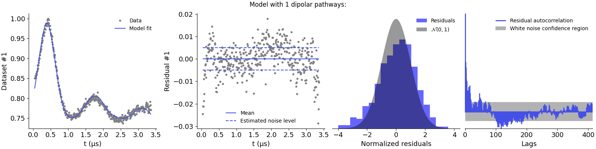
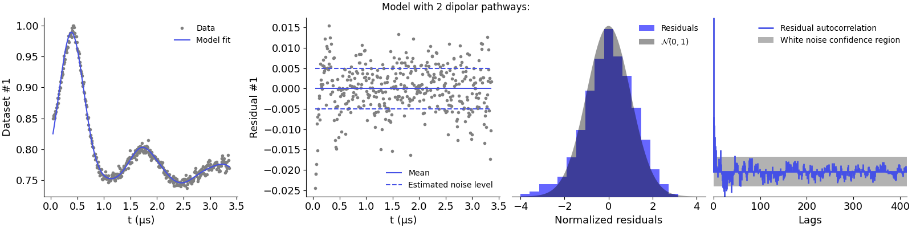

<!DOCTYPE html>

<html lang="en">
  <head>
    <meta charset="utf-8" />
    <meta name="viewport" content="width=device-width, initial-scale=1.0" /><meta name="generator" content="Docutils 0.17.1: http://docutils.sourceforge.net/" />

    <title>Validating multi-pathway models based on the data &#8212; DeerLab</title>
    
  <link href="../../_static/css/theme.css" rel="stylesheet">
  <link href="../../_static/css/index.ff1ffe594081f20da1ef19478df9384b.css" rel="stylesheet">

    
  <link rel="stylesheet"
    href="../../_static/vendor/fontawesome/5.13.0/css/all.min.css">
  <link rel="preload" as="font" type="font/woff2" crossorigin
    href="../../_static/vendor/fontawesome/5.13.0/webfonts/fa-solid-900.woff2">
  <link rel="preload" as="font" type="font/woff2" crossorigin
    href="../../_static/vendor/fontawesome/5.13.0/webfonts/fa-brands-400.woff2">

    
      

    
    <link rel="stylesheet" type="text/css" href="../../_static/pygments.css" />
    <link rel="stylesheet" type="text/css" href="../../_static/css/blank.css" />
    <link rel="stylesheet" type="text/css" href="../../_static/plot_directive.css" />
    <link rel="stylesheet" type="text/css" href="../../_static/copybutton.css" />
    <link rel="stylesheet" type="text/css" href="../../_static/gallery.css" />
    <link rel="stylesheet" type="text/css" href="../../_static/gallery-binder.css" />
    <link rel="stylesheet" type="text/css" href="../../_static/gallery-dataframe.css" />
    <link rel="stylesheet" type="text/css" href="../../_static/gallery-rendered-html.css" />
    <link rel="stylesheet" type="text/css" href="../../_static/theme_override.css" />
    
  <link rel="preload" as="script" href="../../_static/js/index.be7d3bbb2ef33a8344ce.js">

    <script data-url_root="../../" id="documentation_options" src="../../_static/documentation_options.js"></script>
    <script src="../../_static/jquery.js"></script>
    <script src="../../_static/underscore.js"></script>
    <script src="../../_static/doctools.js"></script>
    <script src="../../_static/clipboard.min.js"></script>
    <script src="../../_static/copybutton.js"></script>
    <link rel="shortcut icon" href="../../_static/favicon.ico"/>
    <link rel="index" title="Index" href="../../genindex.html" />
    <link rel="search" title="Search" href="../../search.html" />
    <link rel="next" title="Analysis of a 4-pulse DEER signal with multiple dipolar pathays" href="ex_fitting_4pdeer_pathways.html" />
    <link rel="prev" title="Distance restraints from 4-pulse DEER data, non-parametric distribution" href="../basic/ex_restraints_4pdeer.html" />
    <meta name="viewport" content="width=device-width, initial-scale=1" />
    <meta name="docsearch:language" content="en">
    

    <!-- Google Analytics -->
    
  </head>
  <body data-spy="scroll" data-target="#bd-toc-nav" data-offset="80">
    
    <div class="container-fluid" id="banner"></div>

    
    <nav class="navbar navbar-light navbar-expand-lg bg-light fixed-top bd-navbar" id="navbar-main"><div class="container-xl">

  <div id="navbar-start">
    
    

<a class="navbar-brand" href="../../index.html">
  
</a>


    
  </div>

  <button class="navbar-toggler" type="button" data-toggle="collapse" data-target="#navbar-collapsible" aria-controls="navbar-collapsible" aria-expanded="false" aria-label="Toggle navigation">
    <span class="navbar-toggler-icon"></span>
  </button>

  
  <div id="navbar-collapsible" class="col-lg-9 collapse navbar-collapse">
    <div id="navbar-center" class="mr-auto">
      
      <div class="navbar-center-item">
        <div class="container-fluid  px-0">
  
    <div class="navbar-collapse collapse navbar-collapse" id="navbar-collapsible">
      <ul class="navbar-nav mr-auto">
        <li class="nav-item">
          <a class="nav-link nav-link" href="../../installation.html">Installation</a>
        </li>

        <li class="dropdown">
          <a class="dropbtn" href="../../user_guide.html" id="navbarDropdown" role="button" data-toggle="dropdown" aria-haspopup="true" aria-expanded="false">User Guide</a>
          <div class="dropdown-content" aria-labelledby="navbarDropdown">
              <a class="nav-dropdown-item dropdown-item" href="../../basics.html">Basics</a>
              <a class="nav-dropdown-item dropdown-item" href="../../getting_started.html">Getting Started</a>
              <a class="nav-dropdown-item dropdown-item" href="../../dipolar_guide_modeling.html">Modeling</a>
              <a class="nav-dropdown-item dropdown-item" href="../../dipolar_guide_fitting.html">Fitting</a>
              <a class="nav-dropdown-item dropdown-item" href="../../theory.html">Theory</a>
          </div>
        </li>

        <li class="dropdown">
            <a class="dropbtn" href="../../advanced_guide.html" id="navbarDropdown" role="button" data-toggle="dropdown" aria-haspopup="true" aria-expanded="false">Advanced Guides</a>
            <div class="dropdown-content" aria-labelledby="navbarDropdown">
                <a class="nav-dropdown-item dropdown-item" href="../../modeling_guide.html">Modeling Guide</a>
                <a class="nav-dropdown-item dropdown-item" href="../../fitting_guide.html">Fitting Guide</a>
                <a class="nav-dropdown-item dropdown-item" href="../../uncertainty_guide.html">Uncertainty Guide</a>
            </div>
          </li>

        <li class="nav-item">
          <a class="nav-link nav-link" href="../../examples.html">Examples</a>
        </li>

        <li class="nav-item">
          <a class="nav-link nav-link" href="../../modelsref.html">Models</a>
        </li>

        
        <li class="nav-item">
            <a class="nav-link nav-link" href="../../reference.html">Reference Index</a>
          </li>

        <li class="dropdown">
          <a class="dropbtn nav-link dropdown-toggle" href="../../more.html" id="navbarDropdown" role="button" data-toggle="dropdown" aria-haspopup="true" aria-expanded="false">More</a>
          <div class="dropdown-content" aria-labelledby="navbarDropdown">
              <a class="nav-dropdown-item dropdown-item" href="../../changelog.html">Release Notes</a>
              <a class="nav-dropdown-item dropdown-item" href="../../publications.html">Publications</a>
              <a class="nav-dropdown-item dropdown-item" href="../../contributing.html">Contributing</a>
              <a class="nav-dropdown-item dropdown-item" href="../../support.html">Support</a>
              <a class="nav-dropdown-item dropdown-item" href="../../license.html">License</a>
              <a class="nav-dropdown-item dropdown-item" href="https://github.com/JeschkeLab/DeerLab">GitHub</a>
              <a class="nav-dropdown-item dropdown-item" href="https://pypi.org/project/DeerLab/#history">Other Versions and Download</a>
          </div>
        </li>
      </ul>

    </div>
  </div>
      </div>
      
    </div>

    <div id="navbar-end">
      
      <div class="navbar-end-item">
        <form class="bd-search d-flex align-items-center" action="../../search.html" method="get">
  <i class="icon fas fa-search"></i>
  <input type="search" class="form-control" name="q" id="search-input" placeholder="Search the docs ..." aria-label="Search the docs ..." autocomplete="off" >
</form>
      </div>
      
    </div>
  </div>
</div>
    </nav>
    

    <div class="container-xl">
      <div class="row">
          
            
            <div class="col-12 col-md-1 col-xl-2 bd-sidebar no-sidebar"></div>
            
          

          
          <div class="d-none d-xl-block col-xl-2 bd-toc">
            
              
              <div class="toc-item">
                

<nav id="bd-toc-nav">
    
</nav>
              </div>
              
              <div class="toc-item">
                
              </div>
              
            
          </div>
          

          
          
            
          
          <main class="col-12 col-md-11 col-xl-8 py-md-5 pl-md-5 pr-md-4 bd-content" role="main">
              
              <div>
                
  <div class="sphx-glr-download-link-note admonition note">
<p class="admonition-title">Note</p>
<p>Click <a class="reference internal" href="#sphx-glr-download-auto-examples-intermediate-ex-multipathway-validation-py"><span class="std std-ref">here</span></a>
to download the full example code</p>
</div>
<section class="sphx-glr-example-title" id="validating-multi-pathway-models-based-on-the-data">
<span id="sphx-glr-auto-examples-intermediate-ex-multipathway-validation-py"></span><h1>Validating multi-pathway models based on the data<a class="headerlink" href="#validating-multi-pathway-models-based-on-the-data" title="Permalink to this headline">¶</a></h1>
<p>How to determine whether the dipolar signal model defined with the
set of specified dipolar pathways pathways is a proper descriptor of
the experimental data.</p>
<p>This example shows how to use goodness-of-fit criteria to determine
whether enough dipolar pathways have been accounted for in the model.</p>
<p>A model that accurately describes the data must result in a residual vector
that is normally distributed, has zero mean, and has no significant
autocorrelations. In this example, we will look at an experimental 4-pulse DEER
dataset acquired on a maltose-binding protein (MBP) and use the built-in
goodness-of-fit tools to quantitatively validate whether the dataste is well described by a
dipolar model with a single, two or three dipolar pathways.</p>
<div class="highlight-python notranslate"><div class="highlight"><pre><span></span><span class="kn">import</span> <span class="nn">numpy</span> <span class="k">as</span> <span class="nn">np</span>
<span class="kn">import</span> <span class="nn">deerlab</span> <span class="k">as</span> <span class="nn">dl</span>
<span class="kn">import</span> <span class="nn">matplotlib.pyplot</span> <span class="k">as</span> <span class="nn">plt</span>
</pre></div>
</div>
<div class="highlight-python notranslate"><div class="highlight"><pre><span></span><span class="c1"># File location</span>
<span class="n">file</span> <span class="o">=</span> <span class="s2">&quot;../data/experimental_mbp_protein_4pdeer.DTA&quot;</span>

<span class="c1"># Experiment information</span>
<span class="n">t0</span> <span class="o">=</span> <span class="mf">0.040</span>
<span class="n">tau1</span> <span class="o">=</span> <span class="mf">0.4</span>
<span class="n">tau2</span> <span class="o">=</span> <span class="mf">3.0</span>

<span class="c1"># Laod and preprocess the data</span>
<span class="n">t</span><span class="p">,</span><span class="n">Vexp</span> <span class="o">=</span> <span class="n">dl</span><span class="o">.</span><span class="n">deerload</span><span class="p">(</span><span class="n">file</span><span class="p">)</span>
<span class="n">t</span> <span class="o">=</span> <span class="n">t</span><span class="p">[:</span><span class="o">-</span><span class="mi">2</span><span class="p">]</span>
<span class="n">Vexp</span> <span class="o">=</span> <span class="n">Vexp</span><span class="p">[:</span><span class="o">-</span><span class="mi">2</span><span class="p">]</span>
<span class="n">Vexp</span> <span class="o">=</span> <span class="n">dl</span><span class="o">.</span><span class="n">correctphase</span><span class="p">(</span><span class="n">Vexp</span><span class="p">)</span>
<span class="n">Vexp</span> <span class="o">=</span> <span class="n">Vexp</span><span class="o">/</span><span class="nb">max</span><span class="p">(</span><span class="n">Vexp</span><span class="p">)</span>
<span class="n">t</span> <span class="o">=</span> <span class="n">t</span><span class="o">-</span> <span class="n">t</span><span class="p">[</span><span class="mi">0</span><span class="p">]</span> <span class="o">+</span> <span class="n">t0</span>

<span class="c1"># Define the distance vector</span>
<span class="n">r</span> <span class="o">=</span> <span class="n">np</span><span class="o">.</span><span class="n">arange</span><span class="p">(</span><span class="mi">3</span><span class="p">,</span><span class="mf">4.5</span><span class="p">,</span><span class="mf">0.05</span><span class="p">)</span>

<span class="c1"># Loop over different dipolar models with varying number of pathways</span>
<span class="k">for</span> <span class="n">Npathways</span> <span class="ow">in</span> <span class="p">[</span><span class="mi">1</span><span class="p">,</span><span class="mi">2</span><span class="p">,</span><span class="mi">3</span><span class="p">]:</span>
    <span class="nb">print</span><span class="p">(</span><span class="sa">f</span><span class="s1">&#39;Model with </span><span class="si">{</span><span class="n">Npathways</span><span class="si">}</span><span class="s1"> dipolar pathways:&#39;</span><span class="p">)</span>

    <span class="c1"># Construct the experiment model with different pathways</span>
    <span class="n">experiment</span> <span class="o">=</span> <span class="n">dl</span><span class="o">.</span><span class="n">ex_4pdeer</span><span class="p">(</span><span class="n">tau1</span><span class="p">,</span><span class="n">tau2</span><span class="p">,</span><span class="n">pathways</span><span class="o">=</span><span class="n">np</span><span class="o">.</span><span class="n">arange</span><span class="p">(</span><span class="mi">1</span><span class="p">,</span><span class="n">Npathways</span><span class="o">+</span><span class="mi">1</span><span class="p">,</span><span class="mi">1</span><span class="p">))</span>

    <span class="c1"># Construct the dipolar model with a non-parametric distance distribution</span>
    <span class="n">Vmodel</span> <span class="o">=</span> <span class="n">dl</span><span class="o">.</span><span class="n">dipolarmodel</span><span class="p">(</span><span class="n">t</span><span class="p">,</span><span class="n">r</span><span class="p">,</span><span class="n">experiment</span><span class="o">=</span><span class="n">experiment</span><span class="p">)</span>

    <span class="c1"># Define the compactness penalty for best results</span>
    <span class="n">compactness</span> <span class="o">=</span> <span class="n">dl</span><span class="o">.</span><span class="n">dipolarpenalty</span><span class="p">(</span><span class="kc">None</span><span class="p">,</span><span class="n">r</span><span class="p">,</span><span class="s1">&#39;compactness&#39;</span><span class="p">)</span>

    <span class="c1"># Fit the data to the current model</span>
    <span class="n">results</span> <span class="o">=</span> <span class="n">dl</span><span class="o">.</span><span class="n">fit</span><span class="p">(</span><span class="n">Vmodel</span><span class="p">,</span><span class="n">Vexp</span><span class="p">,</span><span class="n">penalties</span><span class="o">=</span><span class="n">compactness</span><span class="p">)</span>

    <span class="c1"># Print the summary of the results</span>
    <span class="nb">print</span><span class="p">(</span><span class="n">results</span><span class="p">)</span>

    <span class="c1"># Plot the fit of the model to the data along its goodness-of-fit tests</span>
    <span class="n">results</span><span class="o">.</span><span class="n">plot</span><span class="p">(</span><span class="n">axis</span><span class="o">=</span><span class="n">t</span><span class="p">,</span> <span class="n">xlabel</span><span class="o">=</span><span class="s1">&#39;t (μs)&#39;</span><span class="p">,</span> <span class="n">gof</span><span class="o">=</span><span class="kc">True</span><span class="p">)</span>
    <span class="n">plt</span><span class="o">.</span><span class="n">suptitle</span><span class="p">(</span><span class="sa">f</span><span class="s1">&#39;Model with </span><span class="si">{</span><span class="n">Npathways</span><span class="si">}</span><span class="s1"> dipolar pathways:&#39;</span><span class="p">)</span>
    <span class="n">plt</span><span class="o">.</span><span class="n">show</span><span class="p">()</span>
</pre></div>
</div>
<ul class="sphx-glr-horizontal">
<li>
</li>
<li>
</li>
<li>
</li>
</ul>
<p class="sphx-glr-script-out">Out:</p>
<div class="sphx-glr-script-out highlight-none notranslate"><div class="highlight"><pre><span></span>Model with 1 dipolar pathways:
Goodness-of-fit:
========= ============= ============= ===================== =======
 Dataset   Noise level   Reduced 𝛘2    Residual autocorr.    RMSD
========= ============= ============= ===================== =======
   #1         0.005         1.868             1.056          0.007
========= ============= ============= ===================== =======
Model hyperparameters:
========================== ===================
 Regularization parameter   Penalty weight #1
========================== ===================
          0.002                   0.037
========================== ===================
Model parameters:
=========== ========= ========================= ====== ======================================
 Parameter   Value     95%-Confidence interval   Unit   Description
=========== ========= ========================= ====== ======================================
 mod         0.189     (0.186,0.192)                    Modulation depth
 reftime     0.390     (0.387,0.394)              μs    Refocusing time
 conc        113.668   (105.840,121.496)          μM    Spin concentration
 P           ...       (...,...)                 nm⁻¹   Non-parametric distance distribution
 P_scale     0.989     (0.988,0.990)             None   Normalization factor of P
=========== ========= ========================= ====== ======================================

Model with 2 dipolar pathways:
Goodness-of-fit:
========= ============= ============= ===================== =======
 Dataset   Noise level   Reduced 𝛘2    Residual autocorr.    RMSD
========= ============= ============= ===================== =======
   #1         0.005         1.433             0.765          0.006
========= ============= ============= ===================== =======
Model hyperparameters:
========================== ===================
 Regularization parameter   Penalty weight #1
========================== ===================
          0.006                   0.001
========================== ===================
Model parameters:
=========== ========= ========================= ====== ======================================
 Parameter   Value     95%-Confidence interval   Unit   Description
=========== ========= ========================= ====== ======================================
 lam1        0.182     (0.179,0.184)                    Amplitude of pathway #1
 reftime1    0.385     (0.382,0.389)              μs    Refocusing time of pathway #1
 lam2        0.036     (0.031,0.042)                    Amplitude of pathway #2
 reftime2    3.352     (3.352,3.391)              μs    Refocusing time of pathway #2
 conc        173.400   (160.702,186.098)          μM    Spin concentration
 P           ...       (...,...)                 nm⁻¹   Non-parametric distance distribution
 P_scale     1.048     (1.047,1.049)             None   Normalization factor of P
=========== ========= ========================= ====== ======================================

Model with 3 dipolar pathways:
Goodness-of-fit:
========= ============= ============= ===================== =======
 Dataset   Noise level   Reduced 𝛘2    Residual autocorr.    RMSD
========= ============= ============= ===================== =======
   #1         0.005         1.055             0.306          0.005
========= ============= ============= ===================== =======
Model hyperparameters:
========================== ===================
 Regularization parameter   Penalty weight #1
========================== ===================
          0.004                   0.048
========================== ===================
Model parameters:
=========== ========= ========================= ====== ======================================
 Parameter   Value     95%-Confidence interval   Unit   Description
=========== ========= ========================= ====== ======================================
 lam1        0.180     (0.175,0.184)                    Amplitude of pathway #1
 reftime1    0.414     (0.406,0.422)              μs    Refocusing time of pathway #1
 lam2        0.034     (0.028,0.040)                    Amplitude of pathway #2
 reftime2    3.356     (3.352,3.399)              μs    Refocusing time of pathway #2
 lam3        0.038     (0.032,0.045)                    Amplitude of pathway #3
 reftime3    -0.033    (-0.048,0.048)             μs    Refocusing time of pathway #3
 conc        128.784   (116.500,141.068)          μM    Spin concentration
 P           ...       (...,...)                 nm⁻¹   Non-parametric distance distribution
 P_scale     1.088     (1.087,1.089)             None   Normalization factor of P
=========== ========= ========================= ====== ======================================
</pre></div>
</div>
<p>The first model is clearly underparametrized as it results in
non-normal residuals and strong correlations. This is supported by the large chi-squared value.
Adding the second pathway seems to improve the description of the data,
as the residuals are now better distributed. However, there appears to be some autocorrelations
left and the chi-squared value still presents too large values.
Adding the third pathway results in the best description of the data,
with normally distributed residuals and no significant autocorrelations.</p>
<p class="sphx-glr-timing"><strong>Total running time of the script:</strong> ( 0 minutes  25.342 seconds)</p>
<div class="sphx-glr-footer class sphx-glr-footer-example docutils container" id="sphx-glr-download-auto-examples-intermediate-ex-multipathway-validation-py">
<div class="sphx-glr-download sphx-glr-download-python docutils container">
<p><a class="reference download internal" download="" href="../../_downloads/1178cc0b2434c2b6a706774c8f898940/ex_multipathway_validation.py"><code class="xref download docutils literal notranslate"><span class="pre">Download</span> <span class="pre">Python</span> <span class="pre">source</span> <span class="pre">code:</span> <span class="pre">ex_multipathway_validation.py</span></code></a></p>
</div>
<div class="sphx-glr-download sphx-glr-download-jupyter docutils container">
<p><a class="reference download internal" download="" href="../../_downloads/26d1bb2a78e7113ea683097c377c6d9a/ex_multipathway_validation.ipynb"><code class="xref download docutils literal notranslate"><span class="pre">Download</span> <span class="pre">Jupyter</span> <span class="pre">notebook:</span> <span class="pre">ex_multipathway_validation.ipynb</span></code></a></p>
</div>
</div>
<p class="sphx-glr-signature"><a class="reference external" href="https://sphinx-gallery.github.io">Gallery generated by Sphinx-Gallery</a></p>
</section>


              </div>
              
              
              <!-- Previous / next buttons -->
<div class='prev-next-area'> 
    <a class='left-prev' id="prev-link" href="../basic/ex_restraints_4pdeer.html" title="previous page">
        <i class="fas fa-angle-left"></i>
        <div class="prev-next-info">
            <p class="prev-next-subtitle">previous</p>
            <p class="prev-next-title">Distance restraints from 4-pulse DEER data, non-parametric distribution</p>
        </div>
    </a>
    <a class='right-next' id="next-link" href="ex_fitting_4pdeer_pathways.html" title="next page">
    <div class="prev-next-info">
        <p class="prev-next-subtitle">next</p>
        <p class="prev-next-title">Analysis of a 4-pulse DEER signal with multiple dipolar pathays</p>
    </div>
    <i class="fas fa-angle-right"></i>
    </a>
</div>
              
          </main>
          

      </div>
    </div>
  
  <script src="../../_static/js/index.be7d3bbb2ef33a8344ce.js"></script>
<footer class="footer mt-5 mt-md-0">
  <div class="container">
    
    <div class="footer-item">
      <p class="copyright">
    &copy; Copyright 2019-2022, Luis Fábregas-Ibáñez, Stefan Stoll, and others.<br>
</p>
    </div>
    
    <div class="footer-item">
      <p class="sphinx-version">
Created using <a href="http://sphinx-doc.org/">Sphinx</a> 4.2.0.<br>
</p>
    </div>
    
  </div>
</footer>
  </body>
</html>